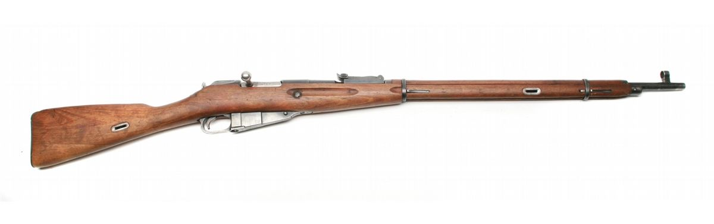
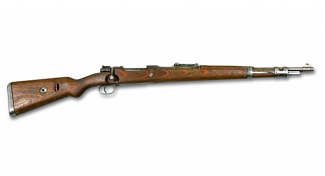
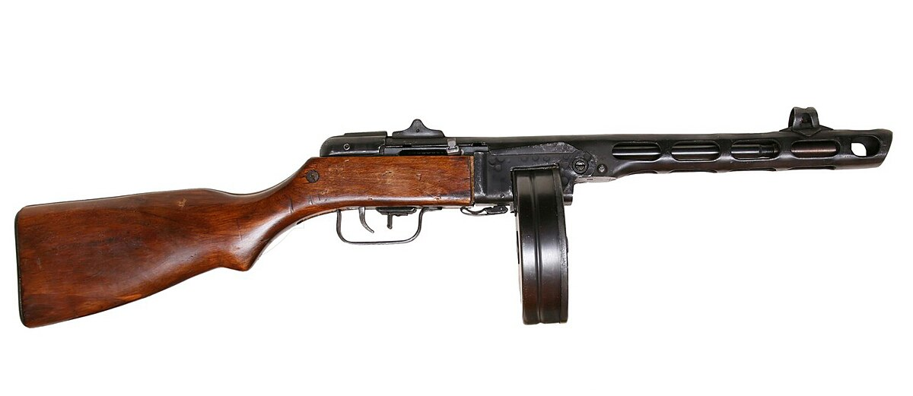

Top 5 Senjata Paling Banyak Diproduksi selama Perang Dunia II
Perang Dunia II bukan cuma catatan kelam dalam sejarah, tapi juga masa di mana teknologi dan produksi senjata berkembang dengan sangat cepat. Bayangkan jutaan prajurit ditempatkan di berbagai front — dari salju tebal di Front Timur, hutan Eropa Barat, sampai pulau-pulau di Pasifik — semuanya membutuhkan senjata yang bisa diandalkan, mudah dibuat, dan siap diproduksi dalam jumlah besar.
Karena itu, banyak negara mulai memaksimalkan pabrik mereka, bekerja siang-malam untuk menciptakan senjata yang tangguh sekaligus praktis. Beberapa jenis senjata bahkan menjadi ikonik bukan karena desainnya saja, tetapi karena jumlahnya yang luar biasa banyak hingga benar-benar mendominasi medan perang.
Di halaman ini, kita akan melihat lima senjata yang paling banyak diproduksi selama Perang Dunia II. Bukan hanya namanya, tapi juga sedikit cerita dan karakteristik dari senjata-senjata ini.
Jadi, kalau kamu penasaran senjata apa saja yang paling mendominasi era tersebut, mari kita mulai dari nomor pertama.

Mosin–Nagant atau 3-line rifle M1891 adalah senapan bolt‑action utama Uni Soviet. Senapan ini menggunakan amunisi 7.62x54mmR. Didesain oleh Sergei Mosin dan Leon Nagant pada tahun 1882 sampai 1891, produksinya dimulai pada tahun 1891 sampai tahun 1973. Senapan ini walaupun tua tapi sangat kuat, sederhana, dan murah sehingga membuatnya mudah diproduksi.
Para Tentara Jerman sampai dilaporkan lebih menyukai Mosin-Nagant dari pada Karabiner 98k buatan lokal mereka. Angka produksinya mencapai 37 juta unit yang membuatnya menjadi senapan bolt-action yang paling banyak diproduksi dalam sejarah. Senapan ini dipakai oleh unit infanteri biasa sampai penembak runduk. Senapan ini telah dipakai dalam banyak perang di dunia, mulai dari Perang Rusia-Jepang sampai invasi Uni Soviet ke Afganistan.

Lee–Enfield, terutama varian No.4, adalah senapan standar pasukan Inggris dan Persemakmuran. Kecepatan bolt‑action yang tinggi serta magasin 10 butir membuatnya unggul dibanding rifle standar negara lain pada era yang sama. Senapan ini merupakan pendesainan ulang dari senapan Lee-Metford. Senapan ini menggunakan amunisi .303 British.
Nama Lee-Enfield sendiri diambil dari nama perancangnya, yaitu James Paris Lee dan lokasi pendesainan sistem riflingnya, yaitu Royal Small Arms Factory yang berlokasi di Enfield.
Angka produksi senapan ini memcapai 17 juta+ unit.
Di Inggris sendiri, senapan ini digunakan mulai dari tahun 1895 sampai 1957. Namun, sampai sekarang masih ada negara yang menggunakan Lee-Enfield yang diproduksi oleh mereka sendiri.
Contohnya adalah Rifle 7.62 mm 2A1 atau yang dikenal juga sebagai Ishapore 2A1 milik India yang diadopsi mulai tahun 1963. Walaupun tidak lagi digunakan secara reguler oleh angkatan bersenjata India, senapan ini kadang masih digunakan oleh kepolisian India

Karabiner 98k, Mauser 98k, atau Kar98k adalah senapan standar Wehrmacht yang terkenal akurat dan tahan lama. Desain senjata ini merupakan penerus dari Gewehr 98. Senapan ini menggunakan amunisi 7.92x57mm Mauser dan diadopsi oleh Wehrmacht
sejak 21 Juni 1935.
Huruf "k" setelah 98 merupakan singkatan dari Kurz yang berarti pendek dalam bahasa Jerman, jadi Karabiner 98k berarti "Karabin 98 pendek". Dan untuk nama Mauser sendiri merupakan nama perusahaan pengembangnya.
Angka produksi Karabiner 98k
mencapai angka 14,6 juta+ unit. Senapan ini memiliki sistem bolt yang bagus, sampai-sampai Amerika Serikat meniru desain bolt dan membuat Karabiner 98k versi mereka sendiri, yaitu Springfield M1903.

M1 Carbine adalah salah satu senapan semi-otomatis yang banyak dipakai oleh Angkatan Darat Amerika Serikat. Menggunakan amunisi .30 carbine, senapan ini dirancang sebagai respon akan permintaan senapan yang
lebih ringan, ringkas, dan mudah digunakan dibanding M1 Garand serta memenuhi kebutuhan pasukan terjun payung AS.
Senapan ini dirancang oleh David Williams, saat dia sedang dipenjara karena kasus pembunuhan seorang deputi sheriff. Dia merancang senjata ini secara otodidak dan menggunakan barang-barang bekas yang ada.
Saat keluar dari penjara dia dipekerjakan di Winchester Repeating Firearms Company dan memulai produksi senapan buatannya di sana.
Diproduksi hingga 6,1 juta unit, senapan ini juga punya varian lain, yaitu M2 dan M3. M2 adalah versi otomatis untuk menyaingi Senapan Serbu StG44 milik Jerman, dan M3 adalah versi M2 yang dipasangi
teropong infra merah.

PPSh-41 adalah senapan mitraliur Uni Soviet semasa Perang Dunia II yang umumnya menggunakan amunisi 7.62x25mm Tokarev. Didesain oleh Geroge Shpagin pada 1941, senapan ini merupakan alternatif yang lebih murah dan simpel dari senapan
mitraliru PPD-40. kepanjangan dari PPSh adalah Pistolét-pulemyót Shpágina yang berarti Pistol Mesin Shpagin, dan angka 41 adalah tahun pendesainannya.
Angka produksinya mencapai 6 juta unit dan senapan ini digunakan dalam skala besar selama Perag Dunia II dan Perang Korea. Desain dari senapan ini sebenarnya merupakan tiruan dari senapan mitraiur Finlandia, yaitu Suomi KP/-31
yang merupakan senapan mitraliur yang sangat efektif digunakan dalam pertempuran jarak dekat dan pertempuran di area perkotaan. PPSh-41 bisa dipakai dengan drum magazine maupun box magazine. Walaupun drum magzaine
menawarkan amunisi lebih banyak untuk sekali reload, tentara Uni Soviet lebih memilih menggunakan box magazine, ini dikarenakan drum magazine mudah macet dan menambah berat senapannya sendiri.